Abstract
This writeup explores diffusion models as iterative image priors. Starting from either random noise or a noised version of an input image, the model repeatedly predicts and removes noise to generate or restore an image. I used this mechanism for text-to-image sampling, image restoration, guided editing, masked inpainting, visual anagrams, and hybrid images.
The experiments make the denoising process explicit: changing timestep, guidance scale, initial noise level, and prompt combination changes how much structure is preserved and how strongly the output follows a text condition.
Forward Process and Sampling Quality
A diffusion model is trained around a forward noising process that gradually corrupts an image. At timestep t, the clean image x0 is mixed with Gaussian noise ε:
Sampling reverses this process. I first tested text prompts such as an oil painting of a snowy mountain, a man wearing a hat, and a rocket ship. Increasing the number of inference steps improved realism, but also increased runtime.
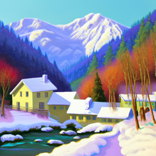
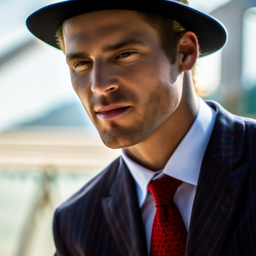
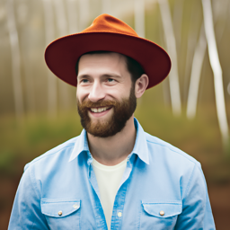
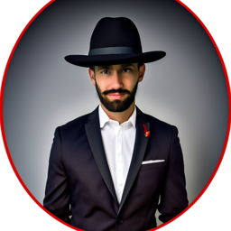
One-Step and Iterative Denoising
I compared classical Gaussian denoising against model-based denoising at several timesteps. Gaussian blur reduces high-frequency noise but cannot distinguish noise from real detail. The pretrained UNet predicts noise using learned image structure, so it reconstructs more plausible detail.
The reverse step estimates x0 from the current noisy image and predicted noise:
Iterative denoising applies this idea over a schedule of timesteps, adding the appropriate variance at each step. This outperformed one-step denoising and Gaussian blur because the model could refine the image gradually.
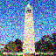
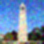
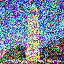
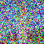
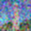
Classifier-Free Guidance
Classifier-free guidance combines an unconditional noise estimate with a conditional one. The guidance scale s amplifies the direction that makes the output better match the prompt:
Compared with unguided sampling, CFG produced sharper and more prompt-aligned images for the high quality photo prompt, while still allowing diversity across samples.
Image-to-Image Translation and Inpainting
For image-to-image translation, I added noise to an input image at different starting indices and then denoised with a prompt. Low starting noise preserves the input; higher starting noise gives the model more freedom to reinterpret the image.
For inpainting, I used a binary mask. At every denoising step, the unmasked pixels are forced to remain consistent with the original image while the masked region is regenerated:


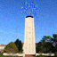
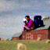
Text-Guided Edits, Visual Anagrams, and Hybrid Prompts
Text-guided image-to-image translation uses the same noising and denoising loop, but changes the prompt to push the reconstruction toward a target concept such as a rocket ship. The degree of transformation is controlled by the starting noise level.
Visual anagrams use two prompt objectives under different orientations. At each denoising step, I estimate noise for the normal image and for a flipped version, then combine the estimates so the image reads differently when rotated or flipped.
The hybrid prompt experiment borrows the frequency idea from earlier image processing work: one prompt is used for low-frequency structure and another for high-frequency detail.
Additional Implementation Notes
The forward noising equation gives a useful interpretation of timestep. At small t, ᾱt is large, so the noised image still contains most of the original structure. At large t, the noise term dominates and the image contains little recognizable information. This explains the image-to-image results: starting from a low noise index preserves the input, while starting from a high noise index lets the model replace more of the image with prompt-consistent content.
The comparison between Gaussian denoising and UNet denoising illustrates the difference between a hand-designed prior and a learned prior. Gaussian blur assumes noise is high frequency and signal is low frequency. That is sometimes true, but real image details such as edges, text, and texture are also high frequency. The diffusion model has learned a stronger prior over natural images, so its denoising step can preserve plausible structure while suppressing noise.
Classifier-free guidance is a tradeoff rather than a free improvement. Increasing the guidance scale pushes samples toward the prompt, but too much guidance can reduce diversity or introduce artifacts. In these experiments, CFG made the high quality photo samples more coherent because the conditional estimate was amplified relative to the unconditional estimate. The same idea later appears in text-guided editing, where the prompt controls the denoising trajectory.
Inpainting requires careful handling of the mask at every timestep, not just at the end. If the model is allowed to denoise the entire image freely, unmasked regions can drift away from the original. By reintroducing the appropriately noised original outside the mask during the loop, the algorithm constrains the edit region while still allowing the masked area to be generated consistently with surrounding context.
Visual anagrams are interesting because the model is asked to satisfy two interpretations simultaneously. A normal image and a transformed version of the image are both evaluated against different prompts. Combining their predicted noise directions creates a denoising update that tries to make both views plausible. This is fragile and seed-dependent, but it shows that diffusion sampling can be treated as an optimization process over multiple visual constraints.
The hybrid prompt images connect this generative work back to the earlier frequency-blending study. Instead of combining two existing images, the denoising update combines prompt-conditioned noise estimates after filtering them into low- and high-frequency components. The result is a generated image whose coarse structure can read as one concept while fine details suggest another, echoing the classical hybrid-image construction but inside the diffusion loop.
Technical Takeaways and Future Work
The strongest pattern across the experiments is that diffusion editing is controlled by how much noise is introduced and how strongly the prompt is enforced. Small noise gives conservative edits, large noise enables semantic transformation, and CFG increases prompt adherence.
Future work would add systematic sweeps over seeds, guidance scale, noise schedule, and mask softness, then compare outputs with both qualitative results and reconstruction metrics.